Graphing
- Cartesian Coordinate Plane: A two-dimensional plane formed by two perpendicular number lines (the x-axis and y-axis) that intersect at the origin (0, 0).
- Origin: The central point of the Cartesian plane at \((0,0)\).
-
Ordered Pair: A pair of numbers \((x, y)\) that represents a point in the Cartesian plane, where \(x\) is the horizontal distance from the origin and \(y\) is the vertical distance.
-
Quadrants: The four sections of the Cartesian plane, divided by the x-axis and y-axis:
- Quadrant I: \(x > 0, y > 0\)
- Quadrant II: \(x < 0, y > 0\)
- Quadrant III: \(x < 0, y < 0\)
- Quadrant IV: \(x > 0, y < 0\)
-
Collinear Points: Points that lie on the same straight line.
Chapter 13: Linear Equations in Two Variables
Definitions
-
Linear Equation in Two Variables: An equation of the form \(Ax + By = C\), where \(A\), \(B\), and \(C\) are constants, and \(A\) and \(B\) are not both zero.
-
Solution to a Linear Equation: Any ordered pair \((x, y)\) that, when substituted into the equation, makes the equation true.
-
Slope: A measure of the steepness and direction of a line, typically denoted by \(m\). It represents the ratio of the vertical change to the horizontal change between any two points on the line.
-
x-intercept: The point where a line crosses the x-axis (has the form \((a, 0)\)).
-
y-intercept: The point where a line crosses the y-axis (has the form \((0, b)\)).
Forms of Linear Equations
Standard Form
\(Ax + By = C\)
- Useful for finding x and y intercepts
- x-intercept: \((\frac{C}{A}, 0)\) when \(B \neq 0\)
- y-intercept: \((0, \frac{C}{B})\) when \(A \neq 0\)
Slope-Intercept Form
\(y = mx + b\)
- \(m\) is the slope of the line
- \(b\) is the y-intercept
- Directly shows how \(y\) changes as \(x\) changes
Point-Slope Form
\(y - y_1 = m(x - x_1)\)
- \(m\) is the slope of the line
- \((x_1, y_1)\) is a point on the line
- Useful when a point and slope are known
Examples
-
Example 1: Converting Between Forms
- Problem: Convert the equation \(3x + 2y = 6\) to slope-intercept form.
- Solution:
- Start with \(3x + 2y = 6\)
- Solve for \(y\): $$ 2y = 6 - 3x \implies y = \frac{6 - 3x}{2} $$ $$ y = \frac{6}{2} - \frac{3x}{2} \implies y = 3 - \frac{3}{2}x $$ $$ y = -\frac{3}{2}x + 3 $$
- Now in slope-intercept form, we can identify:
- Slope \(m = -\frac{3}{2}\)
- y-intercept \(b = 3\), or point \((0, 3)\)
-
Example 2: Finding Intercepts
- Problem: Find the x and y intercepts of the line \(4x - 5y = 20\).
- Solution:
- For x-intercept, set \(y = 0\): $$ 4x - 5(0) = 20 \implies 4x = 20 $$ $$ x = 5 $$ So the x-intercept is at point \((5, 0)\)
- For y-intercept, set \(x = 0\): $$ 4(0) - 5y = 20 \implies -5y = 20 $$ $$ y = -4 $$ So the y-intercept is at point \((0, -4)\)
-
Example 3: Graphing a Linear Equation
- Problem: Graph the line \(y = 2x - 3\).
- Solution:
- Identify the slope \(m = 2\) and y-intercept \(b = -3\)
- Plot the y-intercept: \((0, -3)\)
- Use the slope to find another point: Starting from \((0, -3)\), move 1 unit right and 2 units up to get \((1, -1)\)
- Draw a line through these points
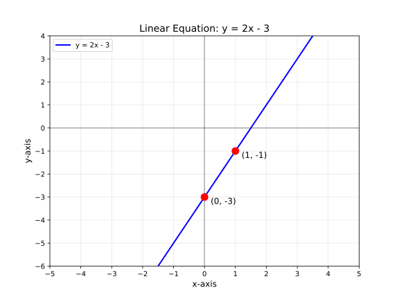
-
Example 4: Finding the Equation of a Line
- Problem: Find the equation of a line passing through the points \((2, 5)\) and \((4, 9)\).
- Solution:
- Calculate the slope: $$ m = \frac{y_2 - y_1}{x_2 - x_1} = \frac{9 - 5}{4 - 2} = \frac{4}{2} = 2 $$
- Use point-slope form with \((x_1, y_1) = (2, 5)\): $$ y - 5 = 2(x - 2) \implies y - 5 = 2x - 4 $$ $$ y = 2x - 4 + 5 \implies y = 2x + 1 $$
- The equation in slope-intercept form is \(y = 2x + 1\), with slope \(m = 2\) and y-intercept \(b = 1\)
-
Example 5: Parallel and Perpendicular Lines
- Problem: Find the equation of a line that passes through the point \((3, 4)\) and is: a) Parallel to the line \(y = 2x - 5\) b) Perpendicular to the line \(y = 2x - 5\)
-
Solution: a) Parallel lines have the same slope. Line \(y = 2x - 5\) has slope \(m = 2\).
- Use point-slope form with \(m = 2\) and \((x_1, y_1) = (3, 4)\): $$ y - 4 = 2(x - 3) \implies y - 4 = 2x - 6 $$ $$ y = 2x - 6 + 4 \implies y = 2x - 2 $$
- The parallel line equation is \(y = 2x - 2\)
b) Perpendicular lines have slopes that are negative reciprocals: \(m_1 \times m_2 = -1\)
- Original line has slope \(m_1 = 2\), so perpendicular slope \(m_2 = -\frac{1}{2}\)
- Use point-slope form with \(m = -\frac{1}{2}\) and \((x_1, y_1) = (3, 4)\): $$ y - 4 = -\frac{1}{2}(x - 3) \implies y - 4 = -\frac{1}{2}x + \frac{3}{2} $$ $$ y = -\frac{1}{2}x + \frac{3}{2} + 4 \implies y = -\frac{1}{2}x + \frac{3}{2} + \frac{8}{2} $$ $$ y = -\frac{1}{2}x + \frac{11}{2} $$
- The perpendicular line equation is \(y = -\frac{1}{2}x + \frac{11}{2}\)
-
Example 6: Application in Data Analysis
- Problem: A dataset shows the relationship between study time (x) in hours and test score (y) in percentage. Data points: \((1, 65)\), \((2, 70)\), \((3, 75)\), \((4, 80)\). Find the linear equation that models this relationship and predict the score for 5 hours of study.
- Solution:
- Calculate the slope using the first and last points: $$ m = \frac{80 - 65}{4 - 1} = \frac{15}{3} = 5 $$
- Use point-slope form with \((x_1, y_1) = (1, 65)\): $$ y - 65 = 5(x - 1) \implies y - 65 = 5x - 5 $$ $$ y = 5x - 5 + 65 \implies y = 5x + 60 $$
- The model is \(y = 5x + 60\), which means each additional hour of study increases the score by 5 percentage points, with a base score of 60% for 0 hours of study.
- Prediction for 5 hours: $$ y = 5(5) + 60 = 25 + 60 = 85 $$ With 5 hours of study, the predicted test score is 85%.
Key Takeaways
- A linear equation in two variables (\(Ax + By = C\)) represents a straight line when graphed on a Cartesian coordinate plane.
- Every point \((x, y)\) on this line is a solution to the equation.
- The three common forms of linear equations (Standard, Slope-Intercept, and Point-Slope) each provide different insights into the properties of the line.
- The slope (\(m\)) measures the steepness and direction of the line, calculated as \(\frac{\text{rise}}{\text{run}}\) or \(\frac{y_2 - y_1}{x_2 - x_1}\).
- Parallel lines have the same slope, while perpendicular lines have slopes that are negative reciprocals of each other (\(m_1 \times m_2 = -1\)).
- Linear equations can model real-world relationships, allowing us to make predictions based on the model.
- In machine learning, linear equations form the foundation for understanding relationships between features and making predictions.
Chapter 14: Plotting Ordered Pairs
Definitions
- Absolute Value: The distance of a number from zero, used to determine movement along axes.
Examples
-
Example 1: Plotting a Simple Ordered Pair
-
Problem Statement: Plot the point \((3, -2)\) on the Cartesian plane.
-
Solution:
- Start at the origin \((0,0)\).
- Move 3 units to the right (since \(x = 3\)).
- Move 2 units down (since \(y = -2\)).
- Mark the point \((3, -2)\).
-
-
Example 2: Identifying the Quadrant of a Point
-
Problem Statement: Determine the quadrant of the point \((-4, 5)\).
-
Solution:
- The x-coordinate is negative and the y-coordinate is positive.
- According to quadrant rules, the point is in Quadrant II.
-
-
Example 3: Points on Axes
-
Problem Statement: Identify the location of \((0, -7)\).
-
Solution:
- The x-coordinate is 0, meaning the point lies on the y-axis.
- The point is 7 units below the origin.
-
-
Example 4: Symmetry in Ordered Pairs
-
Problem Statement: Reflect the point \((2,3)\) across the y-axis.
-
Solution:
- The reflection across the y-axis negates the x-coordinate.
- The new point is \((-2,3)\).
-
-
Example 5: Distance Between Two Points
-
Problem Statement: Find the distance between \((1,2)\) and \((4,6)\).
-
Solution: Using the distance formula: $$ D = \sqrt{(x_2 - x_1)^2 + (y_2 - y_1)^2} $$ $$ D = \sqrt{(4-1)^2 + (6-2)^2} $$ $$ D = \sqrt{3^2 + 4^2} = \sqrt{9+16} = \sqrt{25} = 5 $$
-
-
Example 6: Real-World Application
-
Problem Statement: A drone starts at \((0,0)\) and moves 5 units east and 3 units north. What is its final position?
-
Solution:
- Move 5 units right (east) → \((5,0)\)
- Move 3 units up (north) → \((5,3)\)
- The final position is \((5,3)\).
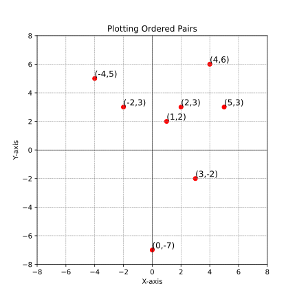
-
Key Takeaways
- The distance formula can be used to calculate the distance between two points.
- Real-world applications of ordered pairs include navigation, computer graphics, and data visualization.
Chapter 15: Graphing Linear Equations
Examples
-
Example 1: Plotting Points to Graph a Line
-
Problem: Graph the equation \( y = 2x + 1 \) by plotting points.
-
Solution:
- Choose values for \( x \):
- Let \( x = 0 \): \( y = 2(0) + 1 = 1 \) → Point \( (0, 1) \)
- Let \( x = 1 \): \( y = 2(1) + 1 = 3 \) → Point \( (1, 3) \)
- Let \( x = -1 \): \( y = 2(-1) + 1 = -1 \) → Point \( (-1, -1) \)
- Plot the points \( (0, 1) \), \( (1, 3) \), and \( (-1, -1) \) on the coordinate plane.
- Draw a straight line through the points.
- Choose values for \( x \):
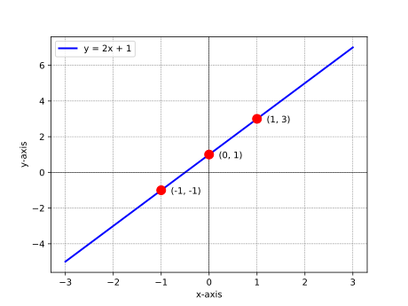
-
-
Example 2: Using Slope-Intercept Form
-
Problem: Graph the equation \( y = -\frac{1}{2}x + 3 \) using the slope-intercept form.
-
Solution:
- Identify the y-intercept \( b = 3 \) → Point \( (0, 3) \).
- Identify the slope \( m = -\frac{1}{2} \).
- From \( (0, 3) \), move 2 units to the right (run) and 1 unit down (rise) to find another point \( (2, 2) \).
- Draw a line through \( (0, 3) \) and \( (2, 2) \).
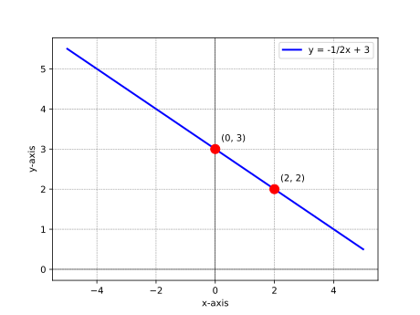
-
-
Example 3: Finding X and Y Intercepts
-
Problem: Graph the equation \( 3x + 2y = 6 \) using intercepts.
-
Solution:
- Find the y-intercept by setting \( x = 0 \): $$ 3(0) + 2y = 6 \implies y = 3 \quad \text{→ Point } (0, 3) $$
- Find the x-intercept by setting \( y = 0 \): $$ 3x + 2(0) = 6 \implies x = 2 \quad \text{→ Point } (2, 0) $$
- Plot the points \( (0, 3) \) and \( (2, 0) \) and draw the line.
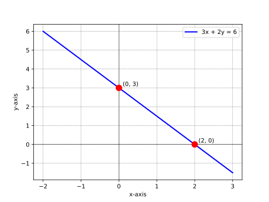
-
-
Example 4: Real-World Application
-
Problem: A taxi service charges a base fare of $5 plus $2 per mile. Write the equation and graph the cost as a function of miles traveled.
-
Solution:
- Let \( x \) = miles traveled, \( y \) = total cost.
- The equation is \( y = 2x + 5 \).
- Graph the line using the y-intercept \( (0, 5) \) and slope \( m = 2 \).
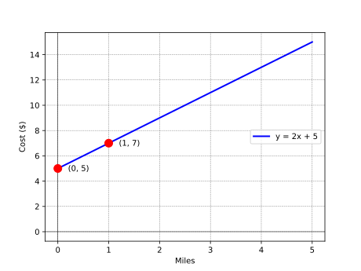
-
-
Example 5: Horizontal and Vertical Lines
-
Problem: Graph the lines \( y = 4 \) and \( x = -3 \).
-
Solution:
- \( y = 4 \) is a horizontal line passing through \( (0, 4) \).
- \( x = -3 \) is a vertical line passing through \( (-3, 0) \).
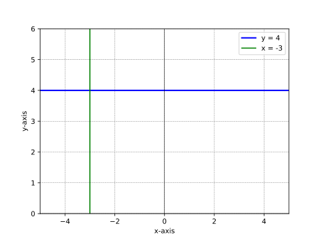
-
Key Takeaways
- The graph of a linear equation is a straight line.
- The slope-intercept form \( y = mx + b \) is the most efficient way to graph a line.
- The slope \( m \) determines the steepness and direction of the line.
- The y-intercept \( b \) is the point where the line crosses the y-axis.
- Real-world applications of linear equations include cost analysis, distance-time relationships, and more.
- Graphing inequalities involves shading the region of the plane that satisfies the inequality.
Chapter 16: Slope Formula
Definitions
-
Slope (\( m \)): A measure of the steepness and direction of a line. It is calculated as the ratio of the vertical change (rise) to the horizontal change (run) between two points on the line:
\[ m = \frac{y_2 - y_1}{x_2 - x_1} \]
2. Forms or Classifications
Types of Slope
| Type of Slope | Description | Example Equation |
|---|---|---|
| Positive Slope | Line rises from left to right. | \( y = 2x + 1 \) |
| Negative Slope | Line falls from left to right. | \( y = -3x + 4 \) |
| Zero Slope | Horizontal line (no vertical change). | \( y = 5 \) |
| Undefined Slope | Vertical line (no horizontal change). | \( x = -2 \) |
Examples
-
Example 1: Calculating Slope from Two Points
-
Problem: Find the slope of the line passing through the points \( (1, 2) \) and \( (3, 6) \).
-
Solution:
- Identify the coordinates: [ (x_1, y_1) = (1, 2), \quad (x_2, y_2) = (3, 6) ]
- Apply the slope formula: [ m = \frac{y_2 - y_1}{x_2 - x_1} = \frac{6 - 2}{3 - 1} = \frac{4}{2} = 2 ] The slope is \( 2 \).
-
-
Example 2: Negative Slope
-
Problem: Find the slope of the line passing through the points \( (-2, 4) \) and \( (1, -2) \).
-
Solution:
- Identify the coordinates: [ (x_1, y_1) = (-2, 4), \quad (x_2, y_2) = (1, -2) ]
- Apply the slope formula: [ m = \frac{y_2 - y_1}{x_2 - x_1} = \frac{-2 - 4}{1 - (-2)} = \frac{-6}{3} = -2 ] The slope is \( -2 \).
-
-
Example 3: Zero Slope
-
Problem: Find the slope of the line passing through the points \( (3, 5) \) and \( (7, 5) \).
-
Solution:
- Identify the coordinates: [ (x_1, y_1) = (3, 5), \quad (x_2, y_2) = (7, 5) ]
- Apply the slope formula: [ m = \frac{y_2 - y_1}{x_2 - x_1} = \frac{5 - 5}{7 - 3} = \frac{0}{4} = 0 ] The slope is \( 0 \), indicating a horizontal line.
-
-
Example 4: Undefined Slope
-
Problem: Find the slope of the line passing through the points \( (4, 1) \) and \( (4, 7) \).
-
Solution:
- Identify the coordinates: [ (x_1, y_1) = (4, 1), \quad (x_2, y_2) = (4, 7) ]
- Apply the slope formula: [ m = \frac{y_2 - y_1}{x_2 - x_1} = \frac{7 - 1}{4 - 4} = \frac{6}{0} ] Division by zero is undefined, so the slope is undefined, indicating a vertical line.
-
-
Example 5: Real-World Application
-
Problem: A car travels 100 miles in 2 hours and 200 miles in 4 hours. Calculate the slope (speed) of the car's journey.
-
Solution:
- Let \( x \) = time (hours), \( y \) = distance (miles).
- Identify the points: [ (x_1, y_1) = (2, 100), \quad (x_2, y_2) = (4, 200) ]
- Apply the slope formula: [ m = \frac{200 - 100}{4 - 2} = \frac{100}{2} = 50 ] The slope is \( 50 \) mph.
-
Key Takeaways
- The slope formula \( m = \frac{y_2 - y_1}{x_2 - x_1} \) calculates the steepness and direction of a line.
- Positive slope indicates an upward trend, while negative slope indicates a downward trend.
- Zero slope corresponds to a horizontal line, and undefined slope corresponds to a vertical line.
- Slope is widely used in real-world applications, such as calculating speed, rates of change, and gradients.
Chapter 17: Equations of a Line
Definitions
- Slope-Intercept Form: \( y = mx + b \), where \( m \) is the slope and \( b \) is the y-intercept.
- Point-Slope Form: \( y - y_1 = m(x - x_1) \), where \( m \) is the slope and \( (x_1, y_1) \) is a point on the line.
- Standard Form: \( Ax + By = C \), where \( A \), \( B \), and \( C \) are integers.
- Horizontal Line: \( y = b \), where \( b \) is a constant.
- Vertical Line: \( x = a \), where \( a \) is a constant.
Examples
-
Example 1: Writing an Equation in Slope-Intercept Form
-
Problem: Write the equation of a line with slope \( 3 \) and y-intercept \( -2 \).
-
Solution:
- Use the slope-intercept form: $$ y = mx + b $$
- Substitute \( m = 3 \) and \( b = -2 \): $$ y = 3x - 2 $$
-
-
Example 2: Writing an Equation in Point-Slope Form
-
Problem: Write the equation of a line with slope \( -1 \) passing through the point \( (2, 4) \).
-
Solution:
- Use the point-slope form: $$ y - y_1 = m(x - x_1) $$
- Substitute \( m = -1 \), \( x_1 = 2 \), and \( y_1 = 4 \): $$ y - 4 = -1(x - 2) $$
- Simplify: $$ y - 4 = -x + 2 \implies y = -x + 6 $$
-
-
Example 3: Converting to Standard Form
-
Problem: Convert \( y = \frac{2}{3}x - 5 \) to standard form.
-
Solution:
- Start with the slope-intercept form: $$ y = \frac{2}{3}x - 5 $$
- Multiply all terms by 3 to eliminate the fraction: $$ 3y = 2x - 15 $$
- Rearrange to standard form \( Ax + By = C \): $$ -2x + 3y = -15 $$
-
-
Example 4: Writing an Equation from Two Points
-
Problem: Write the equation of the line passing through \( (1, 3) \) and \( (4, 9) \).
-
Solution:
- Calculate the slope: $$ m = \frac{9 - 3}{4 - 1} = \frac{6}{3} = 2 $$
- Use the point-slope form with \( (1, 3) \): $$ y - 3 = 2(x - 1) $$
- Simplify: $$ y - 3 = 2x - 2 \implies y = 2x + 1 $$
-
-
Example 5: Real-World Application
-
Problem: A company's revenue increases by $500 for every additional unit sold. If the revenue is $2000 when 10 units are sold, write the equation of the revenue line.
-
Solution:
- Let \( x \) = units sold, \( y \) = revenue.
- The slope \( m = 500 \).
- Use the point \( (10, 2000) \) in point-slope form: $$ y - 2000 = 500(x - 10) $$
- Simplify: $$ y - 2000 = 500x - 5000 \implies y = 500x - 3000 $$
-
Key Takeaways Section
- The slope-intercept form \( y = mx + b \) is the most common way to express a linear equation.
- The point-slope form \( y - y_1 = m(x - x_1) \) is useful when a point and slope are known.
- Standard form \( Ax + By = C \) is often used in systems of equations.
- Horizontal and vertical lines have unique equations \( y = b \) and \( x = a \), respectively.
- Linear equations are widely used in modeling real-world scenarios, such as revenue and cost analysis.
Chapter 18: Parallel & Perpendicular Lines
Definitions
- Parallel Lines: Two lines are parallel if they have the same slope and will never intersect.
- Perpendicular Lines: Two lines are perpendicular if the product of their slopes is -1 (i.e., their slopes are negative reciprocals of each other).
- Slope (\( m \)): The measure of the steepness of a line, calculated as \( m = \frac{y_2 - y_1}{x_2 - x_1} \).
- Negative Reciprocal: If the slope of one line is \( m \), the slope of a perpendicular line is \( -\frac{1}{m} \).
Forms or Classifications
Relationships Between Lines
| Relationship | Condition on Slopes | Example Equations |
|---|---|---|
| Parallel | \( m_1 = m_2 \) | \( y = 2x + 3 \) and \( y = 2x - 1 \) |
| Perpendicular | \( m_1 \cdot m_2 = -1 \) | \( y = 2x + 3 \) and \( y = -\frac{1}{2}x + 4 \) |
| Neither | Slopes are neither equal nor negative reciprocals | \( y = 2x + 3 \) and \( y = 3x - 1 \) |
Examples
-
Example 1: Identifying Parallel Lines
-
Problem: Determine if the lines \( y = 3x + 2 \) and \( y = 3x - 5 \) are parallel.
-
Solution:
- Compare the slopes of both lines:
- Slope of first line: \( m_1 = 3 \).
- Slope of second line: \( m_2 = 3 \).
- Since \( m_1 = m_2 \), the lines are parallel.
- Compare the slopes of both lines:
-
-
Example 2: Identifying Perpendicular Lines
-
Problem: Determine if the lines \( y = 4x + 1 \) and \( y = -\frac{1}{4}x + 3 \) are perpendicular.
-
Solution:
- Compare the slopes of both lines:
- Slope of first line: \( m_1 = 4 \).
- Slope of second line: \( m_2 = -\frac{1}{4} \).
- Check if the product of the slopes is \(-1\): [ m_1 \cdot m_2 = 4 \cdot \left(-\frac{1}{4}\right) = -1 ]
- Since the product is \(-1\), the lines are perpendicular.
- Compare the slopes of both lines:
-
-
Example 3: Writing the Equation of a Parallel Line
-
Problem: Write the equation of a line parallel to \( y = -2x + 3 \) that passes through the point \( (1, 4) \).
-
Solution:
- The slope of the given line is \( m = -2 \). A parallel line will have the same slope.
- Use the point-slope form with the point \( (1, 4) \): [ y - y_1 = m(x - x_1) \implies y - 4 = -2(x - 1) ]
- Simplify: [ y - 4 = -2x + 2 \implies y = -2x + 6 ]
- The equation of the parallel line is \( y = -2x + 6 \).
-
-
Example 4: Writing the Equation of a Perpendicular Line
-
Problem: Write the equation of a line perpendicular to \( y = \frac{3}{4}x - 2 \) that passes through the point \( (0, 5) \).
-
Solution:
- The slope of the given line is \( m_1 = \frac{3}{4} \). The slope of a perpendicular line is the negative reciprocal: [ m_2 = -\frac{4}{3} ]
- Use the point-slope form with the point \( (0, 5) \): [ y - y_1 = m(x - x_1) \implies y - 5 = -\frac{4}{3}(x - 0) ]
- Simplify: [ y - 5 = -\frac{4}{3}x \implies y = -\frac{4}{3}x + 5 ]
- The equation of the perpendicular line is \( y = -\frac{4}{3}x + 5 \).
-
-
Example 5: Real-World Application
-
Problem: Two roads intersect at a right angle. The first road follows the equation \( y = 2x + 1 \). Find the equation of the second road if it passes through the point \( (3, 4) \).
-
Solution:
- The slope of the first road is \( m_1 = 2 \). The slope of the second road (perpendicular) is: [ m_2 = -\frac{1}{2} ]
- Use the point-slope form with the point \( (3, 4) \): [ y - 4 = -\frac{1}{2}(x - 3) ]
- Simplify: [ y - 4 = -\frac{1}{2}x + \frac{3}{2} \implies y = -\frac{1}{2}x + \frac{11}{2} ]
- The equation of the second road is \( y = -\frac{1}{2}x + \frac{11}{2} \).
-
Key Takeaways
- Parallel lines have the same slope and never intersect.
- Perpendicular lines have slopes that are negative reciprocals of each other and intersect at a right angle.
- The slope-intercept form \( y = mx + b \) is useful for identifying parallel and perpendicular lines.
- Real-world applications include designing roads, buildings, and other structures where angles and orientations are important.
Chapter 19: Graphing Inequalities
Definitions
- Linear Inequality: An inequality that can be written in the form \( Ax + By < C \), \( Ax + By > C \), \( Ax + By \leq C \), or \( Ax + By \geq C \).
- Boundary Line: The line corresponding to the equation \( Ax + By = C \), which divides the coordinate plane into two regions.
- Shaded Region: The area of the plane that represents all solutions to the inequality.
- Test Point: A point used to determine which side of the boundary line satisfies the inequality.
Forms or Classifications
Types of Inequalities
| Inequality Symbol | Boundary Line Type | Shaded Region |
|---|---|---|
| \( < \) or \( > \) | Dashed line (not included) | Above or below the boundary line |
| \( \leq \) or \( \geq \) | Solid line (included) | Above or below the boundary line |
Examples
-
Example 1: Graphing \( y > 2x + 1 \)
-
Problem: Graph the inequality \( y > 2x + 1 \).
-
Solution:
- Graph the boundary line \( y = 2x + 1 \) as a dashed line (since the inequality is strict).
- Choose a test point not on the line, such as \( (0, 0) \).
- Substitute \( (0, 0) \) into the inequality: [ 0 > 2(0) + 1 \implies 0 > 1 \quad \text{(False)} ]
- Shade the region above the boundary line, as the test point does not satisfy the inequality.
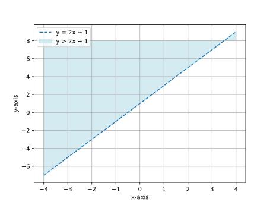
-
-
Example 2: Graphing \( y \leq -3x + 2 \)
-
Problem: Graph the inequality \( y \leq -3x + 2 \).
-
Solution:
- Graph the boundary line \( y = -3x + 2 \) as a solid line (since the inequality includes equality).
- Choose a test point not on the line, such as \( (0, 0) \).
- Substitute \( (0, 0) \) into the inequality: [ 0 \leq -3(0) + 2 \implies 0 \leq 2 \quad \text{(True)} ]
- Shade the region below the boundary line, as the test point satisfies the inequality.
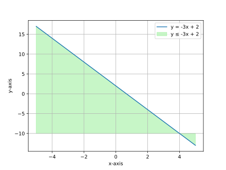
-
-
Example 3: Graphing \( 2x + 3y \geq 6 \)
-
Problem: Graph the inequality \( 2x + 3y \geq 6 \).
-
Solution:
- Rewrite the inequality in slope-intercept form: [ 3y \geq -2x + 6 \implies y \geq -\frac{2}{3}x + 2 ]
- Graph the boundary line \( y = -\frac{2}{3}x + 2 \) as a solid line.
- Choose a test point not on the line, such as \( (0, 0) \).
- Substitute \( (0, 0) \) into the inequality: [ 0 \geq -\frac{2}{3}(0) + 2 \implies 0 \geq 2 \quad \text{(False)} ]
- Shade the region above the boundary line.
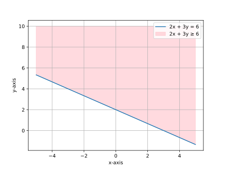
-
-
Example 4: Real-World Application
-
Problem: A company produces two products, \( x \) and \( y \). The production constraint is \( 4x + 5y \leq 20 \). Graph the feasible region.
-
Solution:
- Rewrite the inequality in slope-intercept form: [ 5y \leq -4x + 20 \implies y \leq -\frac{4}{5}x + 4 ]
- Graph the boundary line \( y = -\frac{4}{5}x + 4 \) as a solid line.
- Choose a test point not on the line, such as \( (0, 0) \).
- Substitute \( (0, 0) \) into the inequality: [ 0 \leq -\frac{4}{5}(0) + 4 \implies 0 \leq 4 \quad \text{(True)} ]
- Shade the region below the boundary line.
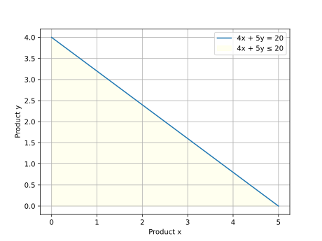
-
Key Takeaways
- Linear inequalities are graphed by first drawing the boundary line and then shading the appropriate region.
- Use a dashed line for strict inequalities (\( < \) or \( > \)) and a solid line for inclusive inequalities (\( \leq \) or \( \geq \)).
- A test point helps determine which side of the boundary line to shade.
- Graphing inequalities is essential in optimization problems, such as linear programming.